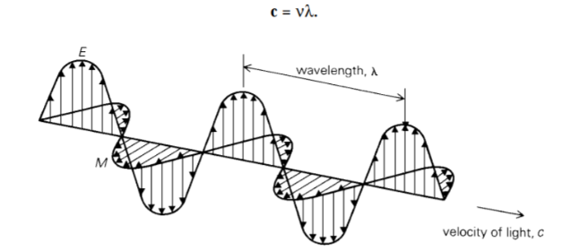

1 Introduction to Remote Sensing
1.1 Summary
To summarise, I’d want to convey what I learned in this chapter’s introduction to remote sensing. I’ll go through some of the key concepts, objectives, and lessons learned from the sentinel and landsat data practicals.
1.1.1 Objective
To be able to operationalise remotely sensed Earth observation data for informing decisions on environmental hazards arising from a changing climate, specifically in relation to (a) urban areas and (b) future urban sustainability.
1.1.2 Key Concepts
1.1.2.1 Remote Sensing
Refers to obtaining information about objects or areas at the Earth’s surface without being in direct contact with the object or area. Acquiring information from the distance.
Two types of sensors:
Passive. Use energy that is available, usually detecting reflected energy from the sun. Energy is in electromagnetic. Such as: human eye, camera, satellite sensor.
Active. Actively emits electromagnetic waves and then waits to receive. Have an energy source for illumination. Such as: radar, x-ray, LiDAR.
1.1.2.2 Electromagnetic Waves
Electromagnetic radiation (has both electric and magnetic fields) propagates (moves) as waves.
Electromagnetic waves interact with:
- Earth’s surface
- Energy being absorbed by the surface
- Energy being transmitted through the surface
- Atmosphere
Energy can be scattered by particles in the atmosphere. Three types of atmospheric scattering:
- Rayleigh = particles are very small compared to the wavelength
- Mie = particles are the same size compared to the wavelength
- Non selective = particles are much larger than the wavelength

We can apply this principle to examples from our own lives, such as reflections on why the sky is blue. Why is the sky above the moon black? An ever-evolving sensor capable of piercing weather/cloud barriers to land capture.
1.1.2.3 Four resolutions of remotely sensed data
- Spatial = the size of the raster grid per pixel (e.g. 20cm or 30m)
- Spectral = the number of bands it records data in
- Temporal = the time it revisits (e.g. daily, every 7 days, on demand)
- Radiometric = identify differences in light or reflectance, in practice this is the range of possible values.
1.1.3 Sentinel Data (practical with QGIS and SNAP)
I download the sentinel data from Copernicus Open Access Hub and get Jakarta, Indonesia area. Sentinel offers a variety of products. We must understand that each may have distinct bands, resolutions, and core wavelengths.
The image below is a true colour composite using a multi band colour render type and merging all bands in QGIS. Along with a graph representation of the spectral signature.
Image below shows the resampling masking of Jakarta sentinel data used SNAP application. We can do a variety of things with Sentinel’s remote sensing data using SNAP. We can manipulate colours, perform statistical analysis and plotting, and transform tasselled caps. We can calculate the brightness, greeness, and wetness of an image to assist us recognise and identify soil, green plants, and moisture.
1.2 Applications
I examine how sentinel data has been used and applied in the ‘Sentinel-2 Data for Land Cover/Use Mapping: A Review’ literature (Phiri et al. 2020). Human activities and natural disasters such as urbanisation, agriculture development, flooding, and fire are rapidly modifying the land cover. Learning this concept helped me realise how critical it is to monitor all of these factors for the long-term viability of human existence. The advancement of satellite remote sensing technologies has transformed methods of monitoring natural and human resources on the Earth’s surface. Sentinel-2 satellites are the second constellation of ESA Sentinel missions and are equipped with multispectral sensors. The Sentinel-2 mission’s primary goal is to provide high resolution satellite data for land cover/use monitoring, climate change monitoring, and disaster monitoring, as well as to supplement other satellite missions such as Landsat.
This journal is particularly intriguing since it examines the contribution of ESA Sentinel-2 data to land cover/use classification and the performance of Sentinel-2 data in various applications (e.g., forest, urban area and natural hazard monitoring). The current research demonstrates that Sentinel-2 has a favourable influence on land cover/use monitoring, notably crop, forest, urban area, and water resource monitoring. The open access policy encourages the increased use of Sentinel-2 data, particularly in developing nations with limited financial means for the collecting of remotely sensed data.
Porphyry copper deposits (PCDs) supply three-quarters of the world’s Cu (Copper) (Sillitoe 2010) and are characterized by hydrothermal alteration and mineralization zones. Remote sensing has been used for hydrothermally altered minerals mapping and mineral prospecting. Sentinel-2A can extract hydroxyl-bearing minerals and iron oxides (Hu et al. 2018). The combinations of bands of the Sentinel may detect specific zones that associated with mineralization prospects. The utilisation of this remote sensing data is highly valuable in assessing the potential of the mineralization zone before undertaking operational or costly production measures.
1.3 Reflection
From this new concept that I learned, I’m thinking to apply the sentinel data analysis to monitor the Kalimantan Island in Indonesia. Indonesia is in the process of moving the capital city from Jakarta (Java Island) to Kalimantan Island (website). One of the main principles of the new capital city (IKN) project is designed according to nature. Over 75% of the IKN’s Governmental Zone will remain green (“IKN - Ibu Kota Negara” 2021). We can utilise remote sensing data to monitor land cover/use, notably crop, forest, urban area, and water resource monitoring. Monitoring city development is difficult, so if it can be aided, particularly in an automated scheme, through the use of remote sensing data, it will substantially simplify the government’s task.